Not applicable for Pinpoint Standalone Light.
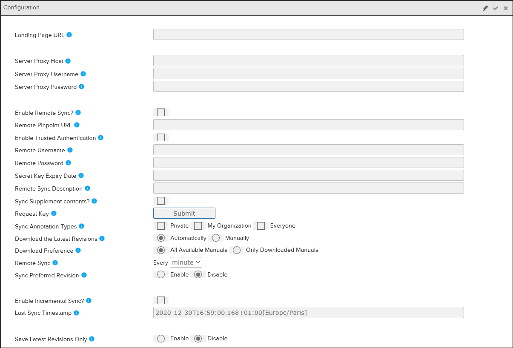
Configuration Pane - Pinpoint Standalone
| Click this icon to make the Configuration pane editable. | |
| Save | Click this icon to save the settings you have entered. |
| Click this icon if you want to remove the settings you have entered. | |
| Landing Page URL | The address to the page you want to display as landing page. (http:// is required). |
| Server Proxy Host | The address to the proxy server. (http:// is required) |
| Server Proxy Username | The user name for the proxy server. |
| Server Proxy Password | The password for the proxy server. |
| Enable Remote Sync? | The default value is disabled. Select this option to enable remote syncing. |
| Remote Pinpoint URL | The address to the remote Pinpoint client (http:// is required). Note: After
entering the URL, add #/main to the end of the address, for example:
http://[servername]:[port]/pinpoint/#/main
|
| Enable Trusted Authentication | The default value is disabled. Select this option to enable SAML authentication. |
| Remote Username | The user name for the remote ACM server. |
| Remote Password | The password for the remote ACM server. |
| Secret Key Expiry Date | The access key (secret key) expiry date. |
| Remote Sync Description | Optional. Enter a description for the remote sync with trusted authentication. |
| Request Key | Click the Submit button to request an trusted
authentication key (access key). After you submit your request, you can approve your access key in Access Control. Once the approved key is authenticated, return to the Configuration pane, and save the details. The data synchronization begins shortly afterwards. |
| Download the Latest Revisions | Select the option for downloading the latest revisions:
|
| Download Preference |
Note: This option is available only when Download the Latest Revisions
is set to Automatically.
|
| Remote Sync | Note: This option is available only when Download the Latest
Revisions is set to Automatically.
Use this option to set the
interval for syncing revisions.
|
| Grant Access | Note: This field displays when you enable data encryption in Data Manager and
data decryption in Pinpoint. Refer to "Configuring Data Encryption in Data Manager
for Pinpoint" in the Flatirons Pinpoint Configuration Guide for more
information.
Click the Generate Encryption Keys link to
display the Generate Secret Key dialog. This dialog allows
administrators to create secret keys and master passwords for the users. |
| Sync Preferred Revision | The default value is disabled. When you select Enable. Pinpoint Standalone synchronizes the \"default revision\" metadata for each publication. The default revision is defined for each publication at the organization level. Refer to Publication Management. |
| Sync Annotation Types |
Activate these checkboxes in Pinpoint Standalone to include synchronizing annotations from Pinpoint Viewer online. The synchronization happens at the backend automatically. Users cannot see the progress and cannot manually synchronize. For each type of annotation that is selected to be synchronized, any new changes to annotations (added/modified/deleted) made after the last successful synchronization on the Pinpoint Viewer online side are brought over. However, anything that is done with annotations in Pinpoint Standalone is not synchronized back to Pinpoint Viewer online. Check the type of annotation to be synced:
Note: By default,
neither checkbox is checked.
Note: You cannot sync Public Candidate annotations.
|
| Sync Supplement contents? |
Activate this checkbox in Pinpoint Standalone to include synchronizing supplements from Pinpoint Viewer online. The synchronization happens at the backend automatically. Users cannot see the progress and cannot manually synchronize. For each synchronization, any new changes to attachments (added/modified/deleted) made after the last successful synchronization on the Pinpoint Viewer online side are brought over. However, anything that is done with attachments in Pinpoint Standalone is not synchronized back to Pinpoint Viewer online. If the Sync Supplement contents? checkbox is deactivated but the Enable Remote Sync is activated, then only publication content is kept synchronized. |
| Sync Pinpoint Local Edit |
Activate this checkbox in Pinpoint Standalone to include synchronizing local edits from Pinpoint Viewer online. The synchronization happens at the backend automatically in 5 minute intervals. Users are notified in the Others tab of the Import Overview page when authoring was last synchronized. For each synchronization, any new changes to local edits (added/modified/deleted)
made after the last successful synchronization on the Pinpoint Viewer online side
are brought over during the next scheduled sync event.
Note: Local edits performed
in Pinpoint Standalone are not synchronized back to Pinpoint Viewer
online.
If the Sync Pinpoint Local Edits checkbox is deactivated but the Enable Remote Sync is activated, then only publication content is kept synchronized. |
| Enable Incremental Sync? | The default value is disabled (unchecked).
|
| Last Sync Timestamp | (Read-only) This field displays the time of the last synchronization process.
When Enable Incremental Sync is enabled, it retrieves the deleted or updated publications that occurred after the last recorded sync timestamp. |
| Save Latest Revisions Only | Note: This configuration appears only if the Download the Latest
Revisions feature is set to Automatically
download revisions. You must have full permissions to the Can enable/disable
access to older revisions privilege to use this feature.
Select the
option for saving the latest revisions:
|
Landing Page URL and Organization Landing Page URL
If you set the Landing Page URL or Organization Landing Page URL, then the landing page for the Pinpoint client will show the specified URL in an iframe. This means that any links will be navigated to inside that frame, the rest of Pinpoint around the frame will stay static. The site that loads from the landing page url is not able to interact with Pinpoint.
When saved, the webpage that is defined replaces the default logo that appears every time Pinpoint is opened. For example:
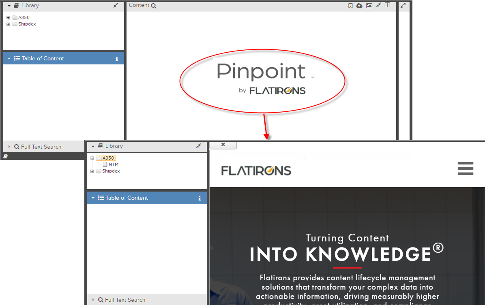
While browsing in Pinpoint, you can always return to the landing page by clicking the Pinpoint logo in the upper left corner of the application.
Server Proxy Settings
When Pinpoint is deployed in a network that requires proxy to access the internet, you can configure the HTTP proxy settings to connect to a central Data Manager. The server proxy settings fields allow you to enter the settings for the proxy host, username, and password.
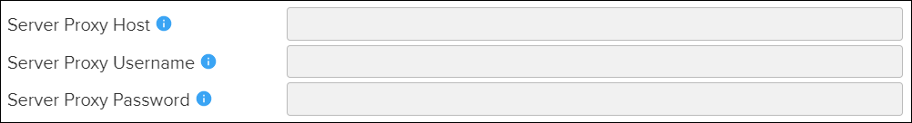
Remote Sync Settings
Select the Enable Remote Sync? checkbox to enable remote syncing. Use the fields to enter the settings for the Remote Pinpoint URL, Remote ACM Username, and Remote ACM Password.
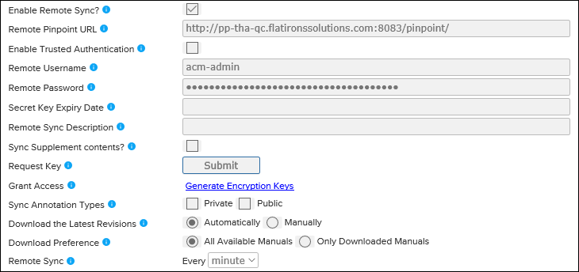
Enable Trusted Authentication
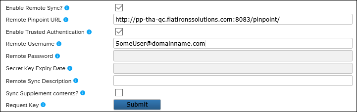
- In the Remote Username field, enter the user name.Note: The user name must be entered exactly as it is in the system and is case-sensitive. To ensure the user name is correct, you can select the user in the footer at the bottom of the screen to show the About dialog in Pinpoint Viewer or ACM. The user name is listed under User ID. For example:
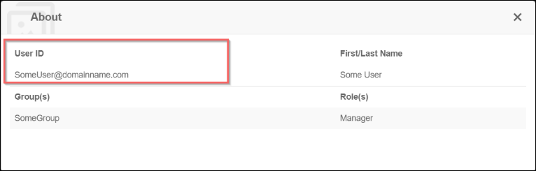
- Optional. In the Remote Sync Description field, enter a description for the remote sync with trusted application authentication.
- In the Request Key field, click the Submit button to request an access key. The ACM client opens in a new window.
- Log in to ACM and approve your access key in the User Details
pane.Note: You can only approve your own access key.
This is an example of the Access Key panel located on the User Details pane in ACM:
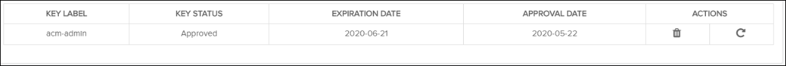
This panel allows you to view/approve/renew/delete your access key. You can only perform these options on your own access keys. You can only have one access key.Refer to the "Managing Access Keys" topic in the Flatirons Access Control User Guide.
- After you approve your access key in ACM, return to the
Configuration pane, and click the
Save button to save the details. The Secret Key Expiry Date and
an activation message appear. For example:
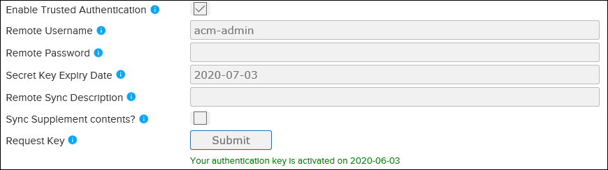
The data synchronization begins shortly afterwards.
Sync Annotations
Downloading Revisions
- Automatically (default)
This option downloads the latest revisions without any user interaction. When you select Automatically, you can specify the Remote Sync interval for syncing. You can also specify the Download Preference:
- All Available Manuals (default)
Syncs all permitted publications/revisions. This is the current behavior.
Note: Selecting this option may impact performance and take up more storage space. - Only Downloaded Manuals
Syncs the latest revisions only. These are only the revisions downloaded for use in offline mode.
Note: Pinpoint only syncs the existing publication's new revision if you select this option. If the publication is not in offline mode, you must switch to Manually to select new publications to sync.
- All Available Manuals (default)
- Manually
Select this option to choose the revisions to download. The number of publications available to download shows on the
 Publication Import Overview icon in the Action
Bar. Click the icon to select the publications you want to
download.
Publication Import Overview icon in the Action
Bar. Click the icon to select the publications you want to
download.
Grant Access
The Grant Access field displays when you enable data encryption in Data Manager and data decryption in Pinpoint. Refer to "Configuring Data Encryption in Data Manager for Pinpoint" in the Flatirons Pinpoint Configuration Guide for more information.
- Click the Generate Encryption Keys link. The
Generate Secret Key dialog appears:
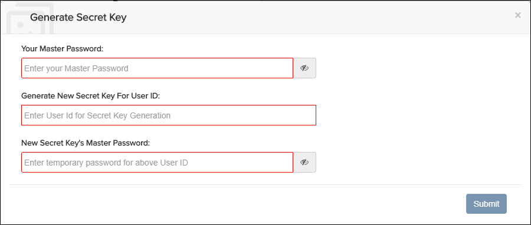
- Enter your master password in the Your Master Password
field.Note: Select the icon to display the password.
- Enter a secret key for the user in the Generate New Secret Key For User ID field.
- Enter a password for the secret key in the New Secret Key's Master
Password field.Note: Select the icon to display the password.
- Click the Submit button.
- Admin user
Enter your master password, and click the Submit button.
- Other usersUpload the secret key file, enter your master password, and click the Submit button.Note: After the first log in, users only need to enter their master password.
Annotation Sync Settings
Select the Enable Incremental Sync? checkbox to enable incremental syncing.
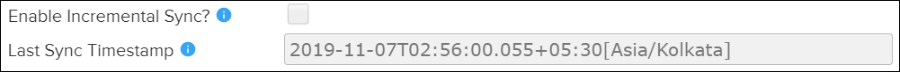
By default, Enable Incremental Sync? is disabled (unchecked). When checked, Pinpoint will query for deleted and updated publications from Data Manager and only evaluate those publications. It only retrieves the publications that occurred after the last recorded sync timestamp.
Synchronized Authored Content
Notification that authored content in the Pinpoint Viewer has been synchronized with
Pinpoint Standalone can be seen in the Import Overview Others tab.
Refer to the example:
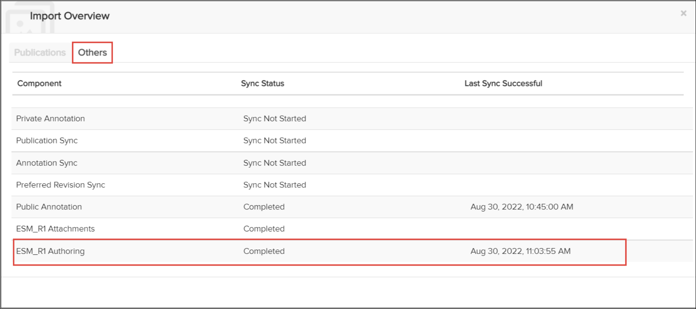
The Others tab will show the time and date of the last synchronized action. Once a local edit has been approved in the Pinpoint Viewer. It will take about 5 minutes for the authored content to synchronize to Pinpoint Standalone.
Local Edit Sync Settings
Pinpoint Standalone user must have the Read access to Can edit remote server details privilege's enabled in ACM to gain access to the Configuration pane section in Pinpoint so the user can sync Pinpoint server with Pinpoint Standalone.
If a revision to a publication has been released in the Pinpoint Viewer then the Merge Report must be generated and resolved before local edits from previous revisions can be synchronized to Pinpoint Standalone.
Only local edits in an approved status will be synchronized to Pinpoint Standalone.
If the Download the Latest Revisions configuration is in manual mode Pinpoint local editing still sync across to the current revision. For additional revisions the user must manually download them from the server.
- Any local edits that are in an approved status.
- Any OEM and COC modifications after the merge/conflict resolution.
Save Latest Revisions Only
By default, the Save Latest Revisions Only option is disabled. The application downloads and imports all revisions. Select the Enable radio button to download and import only the latest full (and any associated incremental) revisions.
- If you enable Save Latest Revisions Only, any revisions previously deleted are not imported. Pinpoint only downloads revisions added after you enable the feature.
- If you disable Save Latest Revisions Only, no revisions are deleted unless you delete them in Data Manager. Any previously imported revisions are retained and are not deleted from Pinpoint.